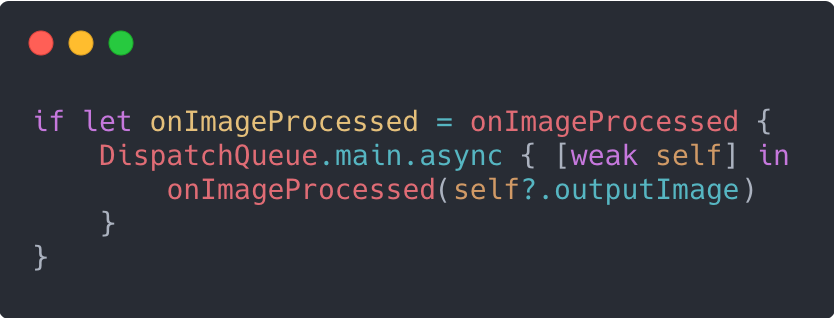

У цьому розділі ви дізнаєтеся про залежності між операціями. Залежність однієї операції від іншої дає дві переваги при взаємодії між ними:
- Гарантує, що залежна операція не починається до завершення головної операції.
- Забезпечує простий спосіб автоматичної передачі даних від першої операції до другої.
Включення залежностей між операціями - одна з основних причин для вибору операцій замість GCD.
Модульна архітектура
Пригадайте проект про зсув нахилу(tilt shift), який ви створювали. Тепер у вас є операція, яка буде завантажувати зображення з мережі, а також операція, яка застосує фільтер tilt shift. Замість цього ви можете створити одну операцію, яка виконує обидві задачі, але, зауважте, це не найкращий спосіб з точки зору архітектури.
В ідеалі класи повинні виконувати одну задачу, забезпечуючи можливість повторного використання всередині і між проектами. Якби ви вбудували мережевий код безпосередньо в операцію зсуву нахилу, то його не можна було б використовувати для зображення яке вже завантажене. Хоча ви можете додати безліч параметрів ініціалізації, що визначають, чи буде зображення надано або завантажено з мережі, але це сильно розширить клас.
Вказання залежностей
Щоб додати або видалити залежності потрібно всього один виклик методу залежної операції. Розглянемо вигаданий приклад, в якому ви завантажуєте зображення, декодуєте його, а потім пропускаєте отримане зображення через фільтр зсуву нахилу:
Якщо вам з якоїсь причини необхідно видалити залежність, ви можете просто викликати явно названий метод removeDependency(op :):
Клас Operation також надає read-only властивість під назвою dependencies, яка буде повертати масив операцій, позначених як залежності для даної операції.
Уникнення піраміди операторів
У залежностей є ще одна позитивна сторона, яка значно спрощує читання коду. Якщо ви спробуєте написати три пов'язані операції разом з допомогою GCD, ви отримаєте так звану pyramid of doom (піраміду загибелі). Розглянемо наступний псевдокод, щоб зрозуміти як можна представити попередній приклад за допомогою GCD:
Який з них буде легше зрозуміти і підтримувати junior розробнику? Врахуйте також, що представлений приклад не бере до уваги цикли збереження або перевірки помилок, які реальний код повинен обробляти належним чином.
Остерігайтесь дедлоку
У розділі 5 «Проблеми паралелізму» ви дізналися про deadlock. Кожен раз, коли завдання залежить від когось іншого, з’являється можливість виникнення дедлоку. Уявіть собі ланцюжок залежностей, якщо графік показує пряму лінію, то дедлок-ситуації немає.
Цілком припустимо, щоб операції з однієї operation queue залежали від операції з іншої operation queue. Навіть в такому випадку, поки немає зациклень, дедлок не стане проблемою.
Однак якщо ви починаєте бачити зациклення, ви майже напевно потрапили в ситуацію із дедлоком.
На попередньому зображенні ви можете побачити в чому проблема:
- Операція 2 не може розпочатися, поки не буде виконана операція 5.
- Операція 5 не може починатися, поки не буде виконана операція 3.
- Операція 3 не може розпочатися, поки не буде виконана операція 2.
Якщо ви починаєте і закінчуєте цикл з одним і тим же номером операції, ви потрапляєте в глухий кут (deadlock). Жодна з операцій ніколи не буде виконана. Немає надійного рішення для виходу з тупикової ситуації, і їх може бути складно знайти, якщо ви не зобразили, чи уявили свої залежності. Якщо ви зіткнетеся з такою ситуацією, у вас немає вибору, окрім як переробити спроектоване вами рішення.
Передача даних між операціями
Тепер, коли у вас є спосіб безпечно зробити одну операцію залежною від іншої, повинен бути спосіб передачі даних між ними. Тут варто скористатися можливостями протоколів. NetworkImageOperation має властивість під ім'ям image. А як щодо випадку, коли властивість називається інакше? Однією з переваг операцій є їх інкапсуляція і можливість повторного використання. Не можна очікувати, що кожен, хто пише операцію, буде називати внутрішні властивості одинаково.
Використання протоколів
Ось що насправді має відбуватися: «Коли ця операція завершиться, якщо все піде добре, я поверну вам у якості результату зображення типу UIImage». Відкрийте Concurrency.xcodeproj в папці з прикріпленими матеріалами до цієї глави, а потім створіть новий Swift файл з ім'ям ImageDataProvider.swift. Додайте в файл наступний код:
Будь-яка операція, результатом якої є UIImage, повинна реалізовувати цей протокол. В цьому випадку імена властивостей будуть збігатися, що спрощує життя. Однак пригадайте свою операцію TiltShiftOperation. Дотримуючись угоди про імена CIFilter, ви назвали цей файл outputImage. Обидва класи повинні відповідати ImageDataProvider.
Додавання розширення
Відкрийте NetworkImageOperation.swift і додайте цей код в самий кінець файлу:
Оскільки клас вже містить властивість, точно таку, як передбачено протоколом, більше нічого робити не потрібно. Хоча ви могли б просто додати ImageDataProvider до визначення класу, Swift Style Guide рекомендує замість цього використовувати розширення.
Для TiltShiftOperation потрібно зробити трохи більше роботи. Хоча у вас вже є вихідне зображення, ім’я цієї властивості не є image, як визначено протоколом.
Додайте наступний код в кінець TiltShiftOperation.swift:
Пам'ятайте, що розширення можна розмістити де завгодно, в будь-якому файлі. Оскільки ви створили обидві операції, має сенс, звичайно, розмістити розширення поруч з класом. Однак ви можете використовувати сторонній фреймворк, який ви не можете редагувати. Якщо операція, яку він надає, дає вам зображення, ви можете створити розширенння до цього класу самостійно у файлі в своєму проекті, і назвати, наприклад, ThirdPartyOperation + Extension.swift.
TiltShiftOperation потребує UIImage в якості вхідних даних. Замість того, щоб просто вимагати ініціалізацію властивості inputImage, тепер ви можете перевірити, чи надає будь-яка з його залежностей UIImage в якості вихідних даних.
У TiltShiftOperation.swift в main() змініть перший оператор guard (перший рядок) на це:
У наведеному вище коді ви намагаєтеся розгорнути або вхідне зображення, безпосередньо надане операції, або ланцюжок залежностей для чогось, що надасть нам зображення, переконавшись, що воно дає зображення, відмінне від нуля.
Якщо жоден з них не допоміг, просто поверніться, не виконуючи ніяких дій.
Залишився останній шматочок, який змусить все це працювати. Оскільки тепер ви перевіряєте ланцюжок залежностей для зображення, повинен бути спосіб форматувати TiltShiftOperation без надання вхідного зображення. Найпростіший спосіб не обробляти дані, що вводяться - це зробити в поточному конструкторі за замовчуванням вхідне зображенням рівним nil.
Налаштуйте свій ініціалізатор, щоб він виглядав наступним чином:
Оновлення table view controller
Поверніться до TiltShiftTableViewController.swift і подивіться, чи зможете ви змінити його так, щоб він завантажував зображення, застосовував фільтер tilt shift, та передавав отримане зображення в cell.
Щоб це працювало, вам потрібно додати операцію завантаження як залежність для операції зсуву нахилу. Іншими словами, tilt shift залежить від операції завантаження для отримання зображення.
Замініть рядок в tableView(_: cellForRowAt :), в якій ви встановлюєте і оголошуєте op, таким кодом:
Замість однієї операції тепер у вас є дві операції і залежність між ними.
Потім, замість того, щоб встановлювати completionBlock для операції, передайте його для tiltShiftOp, тому що він поверне вам зображення.
Замініть весь completion block наступним:
Нарешті, замініть рядок, в якому ви додаєте op в чергу, цими двома рядками:
Незважаючи на те, що ви вказали, що tilt shift залежить від завантаження, вам все одно потрібно додати обидві операції в чергу. Черга буде відстежувати залежності і запускати операцію зсуву нахилу тільки після завершення завантаження.
Зберіть і запустіть додаток. Ви повинні побачити список зображень зі зміщеним нахилом!
Власний completion handler
У поточному написаному коді використовується completionBlock за замовчуванням, що надається класом Operation. Вам потрібно виконати невелику додаткову роботу, щоб отримати зображення і відправити його назад в основну чергу. В такому випадку ви можете розглянути можливість додавання кастомного completion block. Повернувшись в TiltShiftOperation.swift, додайте нову необов’язкову властивість для зберігання користувацького completion block.
Потім, в самому кінці методу main(), після запису outputImage викличте цей completion block в основному потоці:
Якщо ви додасте цей шматок коду назад в TiltShiftTableViewController.swift, в tableView(_: cellForRowAt :), ви можете замінити весь код completion block наступним чином:
Хоча від цих змін немає ніяких функціональних відмінностей або різниці в продуктивності, вони роблять роботу з вашої операцією трохи приємніше для користувача. Ви усунули плутанину з приводу будь-якого можливого циклу збереження і забезпечили правильну роботу main потоку з UI автоматично.
Дуже важливо задокументувати той факт, що ваш completion handler виконується в main потоці, а не в потоці, наданим чергою операцій.
Кінцевий користувач повинен знати, що ви переключаєте потоки на них, щоб вони не робили нічого, що могло б вплинути на додаток.
Зверніть увагу, що в представленому коментарі є три символи /. Якщо ви використовуєте цей синтаксис, Xcode відобразить цей коментар в Quick Help Inspector.